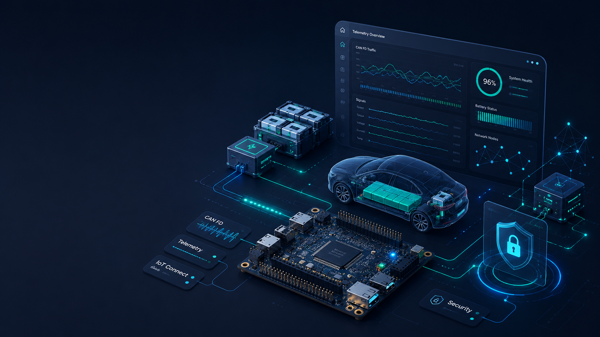
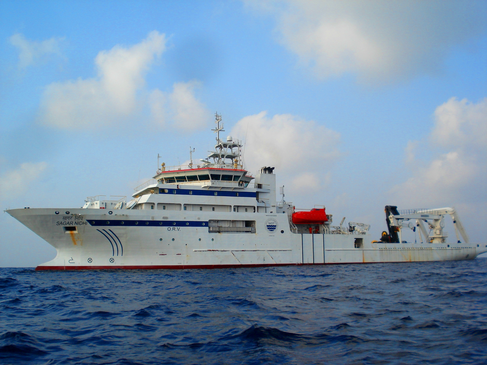
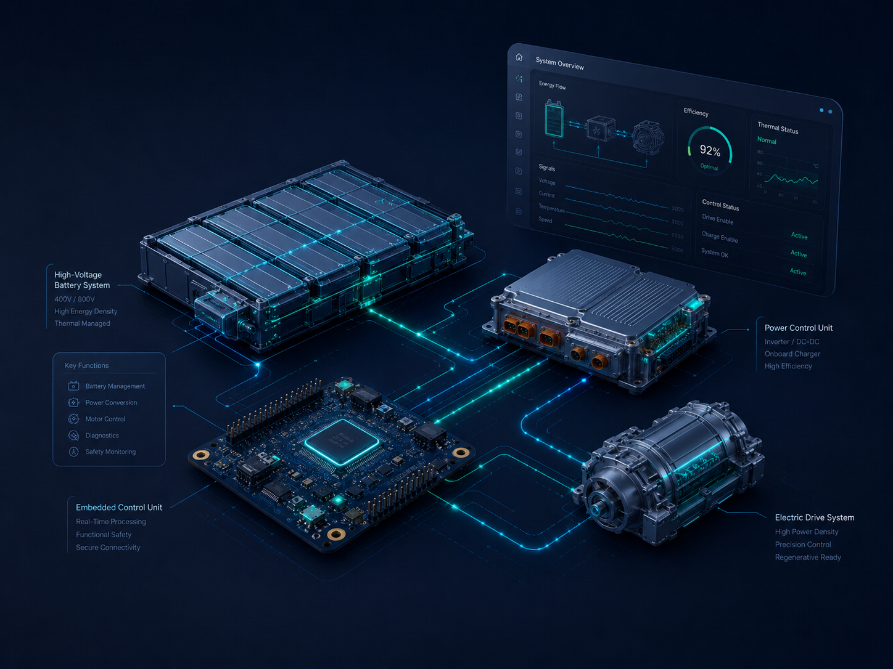
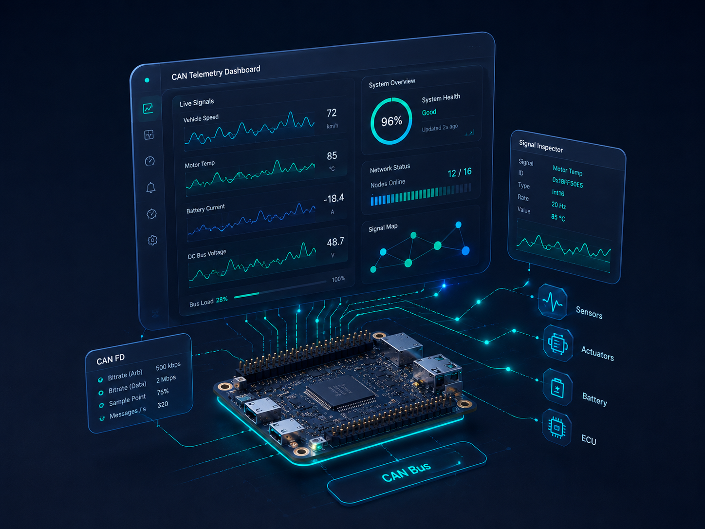
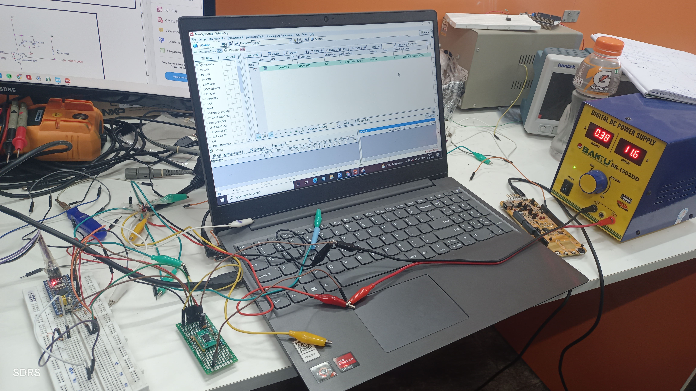
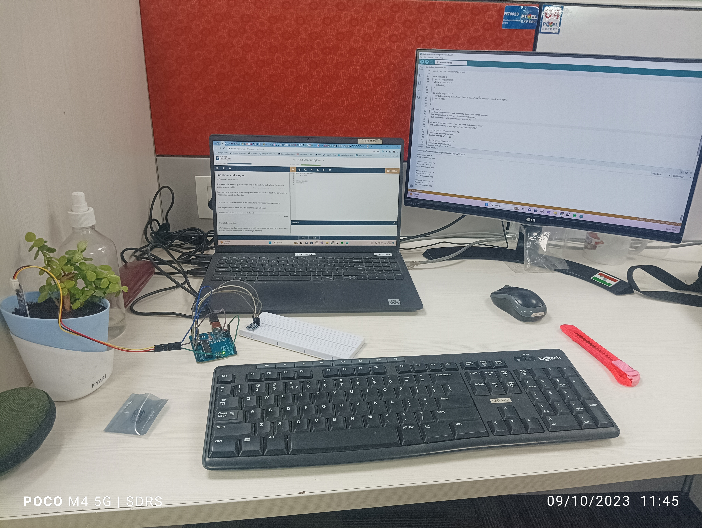
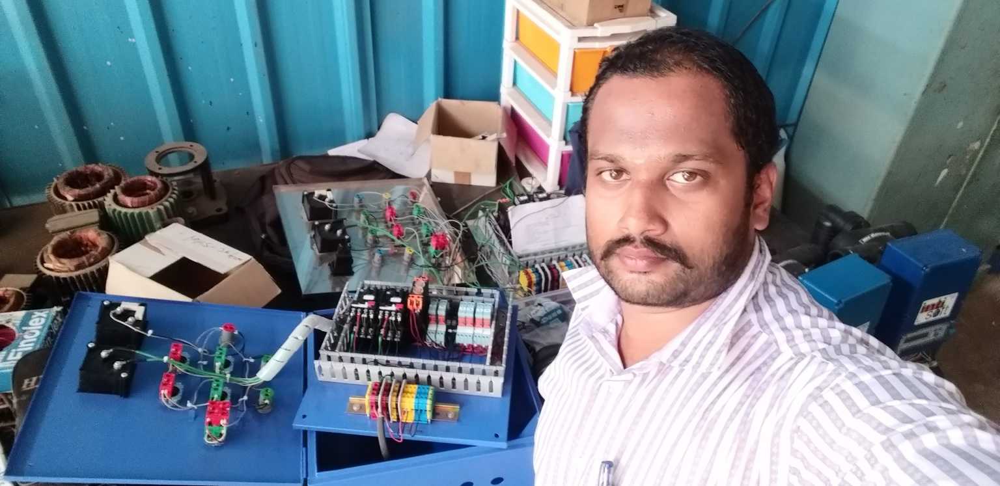
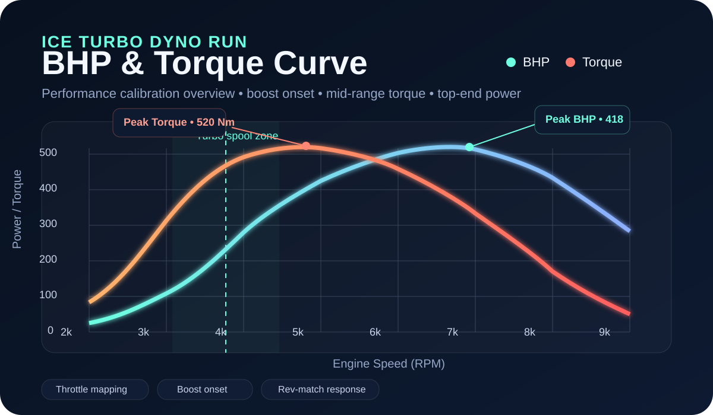
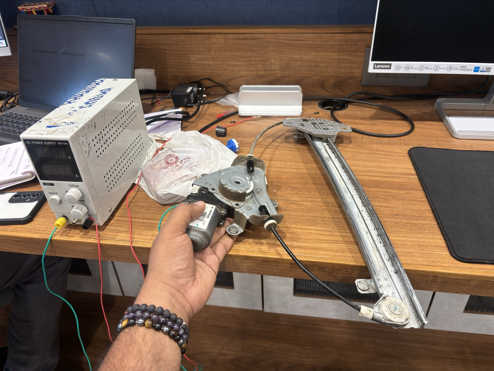

EV & Hybrid Control Systems
Battery SOC-based strategies, powertrain sequencing, range extender control, real-time operating logic, and safety-conscious embedded control workflows.
SENIOR AUTOMOTIVE EMBEDDED SYSTEMS ENGINEER • ECU SYSTEMS • CAN / CAN FD • CALIBRATION LOGIC • PERFORMANCE ELECTRONICS
I build automotive embedded systems across EV control, ECU communication architecture, diagnostics, telemetry, and secure in-vehicle electronics. My approach combines product discipline, system-level thinking, and a genuine interest in performance, drivability, and control refinement.
Start engine first • Neutral free-rev preserved • Drive mode adds auto upshift and rev-match downshift
Master's in Embedded System Technologies
EV • ECU • CAN FD • Secure Automotive Platforms
DRIVER PROFILE
I am Shivadurgarajasekar Selvaraj, a senior embedded systems professional focused on automotive electronics, EV platforms, connected vehicle architecture, and robust communication systems. I enjoy working close to the product, where firmware, diagnostics, network behaviour, and real-world usability meet. My early field experience also includes offshore marine electronics work for ocean-observation and tsunami-buoy deployment programs with NIOT and INCOIS operations.
Beyond the engineering fundamentals, I have a genuine interest in vehicle behaviour and performance-oriented electronics. That perspective shapes how I look at ECU logic, calibration strategy, response characteristics, secure communication, and the overall balance between reliability, performance, and maintainability.
PERFORMANCE SYSTEMS
Battery SOC-based strategies, powertrain sequencing, range extender control, real-time operating logic, and safety-conscious embedded control workflows.
Performance-oriented engineering interest around drivability, throttle and torque shaping, response optimization, and calibration-aware ECU remapping with disciplined validation thinking.
Message architecture, gateway logic, diagnostics integration, signal planning, data flow clarity, and scalable communication design for production-minded ECU networks.
AES-128 CMAC based message authentication, secure boot concepts, access control, ECU trust boundaries, firmware integrity, and security-oriented diagnostic hardening.
Professional Signature
I value clean architecture, maintainable firmware, strong validation habits, and solutions that scale without losing clarity.
I am naturally drawn to how control logic influences response, drivability, and the feel of a vehicle, not just how a system looks on paper.
I approach modern ECU systems with the understanding that robustness now includes authentication, access control, integrity, and network trust.
CAREER TRACK

Worked as an Electronics Engineer with Eurotech Global Solution India Pvt. Ltd. supporting offshore buoy deployment and ocean-observation operations with ORV Sagar Nidhi for NIOT and INCOIS programs. The scope included RAMA buoy and OMNI/OOS buoy operation support, seabed BPR deployment assistance for tsunami detection, onboard electronics checks, sensor and telemetry validation, power and wiring verification, field troubleshooting, and coordination during live sea operations. The experience added strong exposure to rugged electronics, marine instrumentation, fault handling, deployment discipline, and reliability-focused engineering in real offshore environments.

Embedded control logic for generator start/stop sequencing, SOC threshold monitoring, traction interlock handling, and coordinated powertrain behaviour for hybrid or range-extended EV systems.

CAN / CAN FD data acquisition, protocol decoding, TCP/JSON telemetry streaming, and dashboard visualization for engineering validation, live monitoring, and diagnostic review.

Worked on an automotive Single Wire CAN communication prototype using an NXP S32 development board, Single Wire CAN transceiver interface, Vehicle Spy neoVI RED 2, bench power supply, and diagnostic monitoring tools. The scope included low-speed CAN communication up to 40 kbps, frame transmission and reception validation, bus wiring checks, signal-level observation, node behaviour testing, message monitoring in Vehicle Spy, and troubleshooting of body-network style communication. The project strengthened practical understanding of S32-based automotive communication, single-wire CAN behaviour, ECU test-bench validation, and professional vehicle network analysis workflows.

Developed a LoRaWAN-based smart agriculture prototype focused on long-range sensor data acquisition and remote field monitoring. The work included sensor interfacing, embedded firmware logic, low-power communication planning, LoRa/LoRaWAN data transmission, gateway-side data flow understanding, and monitoring of environmental parameters such as soil moisture, temperature, humidity, and field-condition signals. The project strengthened practical experience in wireless embedded systems, IoT telemetry, sensor-node design, field reliability, and long-range communication for agriculture automation.

Handled hands-on electrical panel work for STP and WTP utility systems, covering single-phase and three-phase panel wiring, pump control circuits, timer-based operation, contactor and relay logic, failure-mode switchover, redundancy paths, MCB/MCCB protection, overload relay integration, terminal block routing, DIN rail component placement, neutral and earth busbar wiring, ferrule and lug termination, panel wire ducting, cable clips, and service-friendly wire lining. The work strengthened my understanding of real field wiring, control reliability, fault isolation, and maintainable panel architecture.

Focused on dyno-based calibration review using BHP and torque curves, boost onset, throttle response, rev-matching feel, and drivability balance. My interest in ECU tuning is rooted in measured engineering, not just peak figures.
Implementation-oriented thinking around authenticated communication using AES-128 CMAC, secure diagnostics access, node trust, ECU hardening, and layered protection for modern vehicle networks.

Handled engineering work around automotive power window systems including motor-drive behaviour, regulator mechanism validation, express up/down functions, anti-pinch logic, current-based obstruction detection, end-stop calibration, and durability-focused troubleshooting. The scope aligns with premium passenger vehicle body-electronics expectations, where safety, refinement, repeatability, and mechanism performance are equally important.
Engineering Perspective
Strong systems begin with a communication and firmware structure that remains understandable as complexity grows.
Good control logic is not only functional. It should feel predictable, refined, and well balanced under real operating conditions.
Telemetry, diagnostics, and HMI visibility should help engineering teams understand behaviour, not just collect numbers.
Trusted communication, integrity protection, and controlled access are part of responsible ECU design, not optional additions.
Collaboration Areas
Firmware development for MCU-based automotive and industrial systems, including control logic, peripheral integration, and communication layers.
Signal decoding, validation tools, CAN / CAN FD analysis, dashboard integration, and workflow automation for engineering teams.
Support for secure ECU communication concepts, authenticated messaging strategies, and access control thinking for embedded platforms.
Proof-of-concepts using STM32, ESP32, Raspberry Pi, and Python for telemetry, data logging, visualization, and engineering validation.
Performance Engineering
This section highlights how I look at ECU tuning from an engineering perspective: BHP and torque interpretation, boost response, throttle behaviour, rev-matching feel, and the overall balance between peak output, drivability, and system awareness.
Representative top-end power target with a clean ramp into the upper RPM range.
Strong mid-range torque emphasis with attention to drivability and traction usability.
Boost onset area used to discuss transient response, spool character, and driver feel.
I interpret dyno runs as a calibration tool, not just as a headline number. Curve shape, spool transition, torque plateau, and power carry all matter when assessing a tune.
Key areas of interest include throttle mapping, boost control behaviour, torque shaping, rev-limit character, and maintaining a response that feels purposeful rather than artificial.
For me, good performance calibration should feel cohesive. The engine response, gearshift interaction, rev-match feel, and overrun character should all work together naturally.
Launch behaviour should balance consistency, traction, and repeatability while still feeling sharp and confidence-inspiring to the driver.
Rev-match calibration influences perceived drivetrain quality. A well-judged blip can make shifts feel cleaner, faster, and more performance-oriented.
Overrun crackles, pops, and turbo sound should be used with intent. The objective is character and engagement, not unnecessary exaggeration.
Engineering Note
I see ECU tuning as a serious engineering activity. Even when the goal is a more exciting and responsive powertrain, the work should remain grounded in system behaviour, reliability awareness, validation discipline, and a clear understanding of how each change affects the overall vehicle.
PIT RADIO
If your work involves EV systems, embedded firmware, secure in-vehicle communication, CAN / CAN FD architecture, calibration-oriented workflows, or advanced automotive electronics, I would be glad to connect.